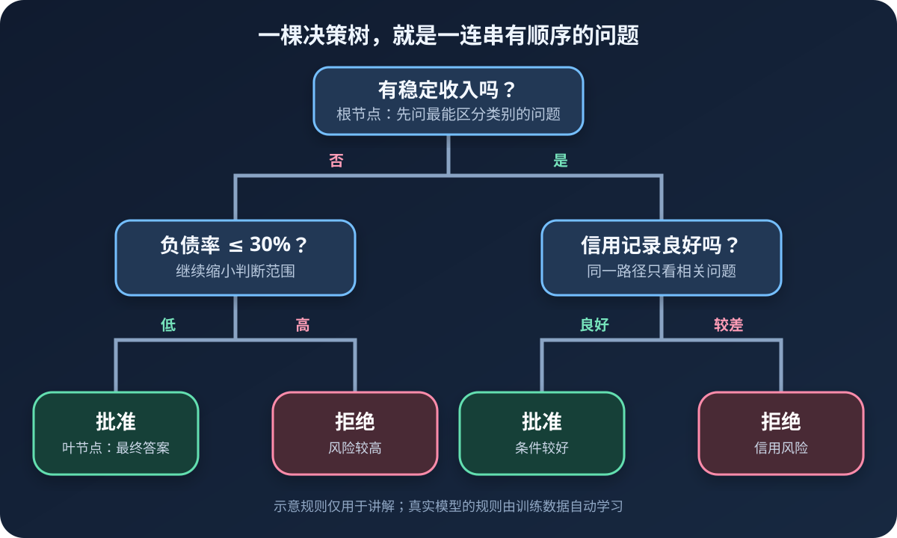
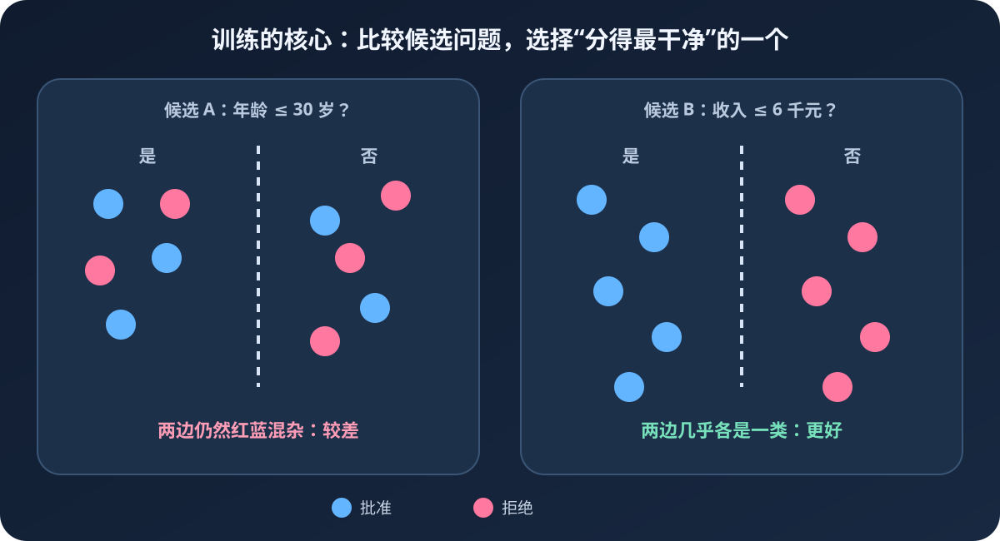

你大概玩过“二十个问题”：心里想一个动物，别人只能问“会飞吗”“生活在水里吗”这类问题。每得到一个答案，候选范围就缩小一点。决策树也是如此——它把一个难判断的问题，拆成一串简单的“是或否”。
读完你会做到
- 认清根节点、内部节点、分支和叶节点
- 手算基尼不纯度，判断哪个问题分得更好
- 理解训练、预测、停止生长和剪枝的完整过程
- 用 Python 与 scikit-learn 训练、画出并评价决策树
一、决策树到底是什么
决策树（Decision Tree）是一种监督学习算法。训练数据不只有特征，还带着正确答案，也就是标签。算法观察许多已知案例，自动学会“先问什么、后问什么”，最后用这套规则判断新数据。

一棵树有四种重要部件：
- 根节点：最上面的第一个问题，所有样本都从这里开始。
- 内部节点：中途继续提出的问题，例如“负债率是否不超过 30%”。
- 分支：问题的答案，例如“是”和“否”。
- 叶节点：不再提问，直接给出“批准”或“拒绝”等最终预测。
二、模型怎么知道先问什么
人可以凭经验挑问题，算法却要把“这个问题很好”变成一个可计算的分数。核心目标只有一句：
每次都选择一个切分，让分开后的各组尽可能“纯”。
“纯”是指一组中的样本尽量属于同一类别。10 个样本全是“批准”非常纯；5 个批准、5 个拒绝则非常混乱。好的问题能让混在一起的数据分到更清楚的两边。

三、用基尼不纯度手算一次
基尼不纯度（Gini impurity）是分类树常用的混乱程度指标。假设一组数据里各类别的比例是 p₁、p₂……，公式是：
Gini = 1 − (p₁² + p₂² + …)
不用被符号吓到。我们只是在做三步：算每类占比、把占比分别平方、用 1 减去平方和。
场景：8 位贷款申请人
| 编号 | 月收入（千元） | 信用记录 | 结果 |
|---|---|---|---|
| 1 | 3 | 良好 | 拒绝 |
| 2 | 4 | 较差 | 拒绝 |
| 3 | 5 | 良好 | 拒绝 |
| 4 | 6 | 良好 | 批准 |
| 5 | 7 | 较差 | 拒绝 |
| 6 | 8 | 良好 | 批准 |
| 7 | 9 | 良好 | 批准 |
| 8 | 10 | 较差 | 批准 |
第 1 步：计算切分前的混乱程度
8 人中有 4 人批准、4 人拒绝，两类比例都是 4/8 = 0.5：
Gini(全部) = 1 − 0.5² − 0.5² = 0.5
二分类时，Gini 为 0 表示全是一类；0.5 表示两类各占一半，是最混乱的状态。
第 2 步：尝试“月收入 ≤ 5.5 千元”
左边有 3 人，全部拒绝，所以 Gini(左) = 0。右边有 5 人，其中 4 人批准、1 人拒绝：
Gini(右) = 1 − (4/5)² − (1/5)² = 0.32
两个子节点大小不同，不能简单求平均，要按样本数量加权：
切分后 Gini = (3/8) × 0 + (5/8) × 0.32 = 0.20
混乱程度从 0.50 降到 0.20，降低了 0.30。这个降低量也叫基尼增益。算法会继续比较收入的其他阈值、信用记录等候选问题，挑选增益最大的那个。
四、一棵树具体是怎样长出来的
- 01把全部训练样本放在根节点
此时所有类别混在一起，先计算当前不纯度。
- 02枚举候选切分
逐个尝试特征和阈值，计算每种切法的加权不纯度。
- 03采用最佳问题
选择不纯度下降最多的切分，把样本送往左右子节点。
- 04对子节点重复以上过程
每个子节点只处理分到自己这里的样本，这就是递归。
- 05满足停止条件
节点已经纯净、样本太少、树达到最大深度，或继续切分收益太小时停止。
预测时不需要重新计算所有训练样本。新数据只需从根节点依次回答问题，直到叶节点；叶节点中数量最多的类别就是预测类别。
五、从零写一个只有一层的决策树
完整决策树需要递归，第一次学习可以先实现决策树桩：它只有一个问题和两个叶节点，却包含训练的核心——搜索最佳切分。
from collections import Counter
def gini(labels):
"""计算一组分类标签的基尼不纯度。"""
total = len(labels)
if total == 0:
return 0.0
counts = Counter(labels)
return 1.0 - sum((count / total) ** 2 for count in counts.values())
def candidate_thresholds(values):
"""返回排序后相邻不同值的中点。"""
unique_values = sorted(set(values))
return [
(left + right) / 2
for left, right in zip(unique_values, unique_values[1:])
]
def find_best_split(features, labels):
"""搜索所有特征和阈值，返回加权 Gini 最小的切分。"""
sample_count = len(labels)
feature_count = len(features[0])
best_split = None
for feature_index in range(feature_count):
values = [row[feature_index] for row in features]
for threshold in candidate_thresholds(values):
left_labels = [
label
for row, label in zip(features, labels)
if row[feature_index] <= threshold
]
right_labels = [
label
for row, label in zip(features, labels)
if row[feature_index] > threshold
]
weighted_gini = (
len(left_labels) / sample_count * gini(left_labels)
+ len(right_labels) / sample_count * gini(right_labels)
)
if best_split is None or weighted_gini < best_split["gini"]:
best_split = {
"feature_index": feature_index,
"threshold": threshold,
"gini": weighted_gini,
"left_label": Counter(left_labels).most_common(1)[0][0],
"right_label": Counter(right_labels).most_common(1)[0][0],
}
return best_split
def predict_stump(tree, sample):
if sample[tree["feature_index"]] <= tree["threshold"]:
return tree["left_label"]
return tree["right_label"]
# 两列特征依次是：月收入（千元）、信用是否良好（1 是，0 否）
X = [[3, 1], [4, 0], [5, 1], [6, 1],
[7, 0], [8, 1], [9, 1], [10, 0]]
y = ["拒绝", "拒绝", "拒绝", "批准", "拒绝", "批准", "批准", "批准"]
tree = find_best_split(X, y)
print(tree)
print("新申请人的预测：", predict_stump(tree, [8.5, 1]))这段代码会发现第 0 个特征（收入）上的某个阈值拥有较低的加权 Gini。真正的树会把左右两组继续送回类似的函数，直到触发停止条件。
六、用 scikit-learn 完成正规训练
python -m pip install scikit-learn matplotlib下面使用自带的鸢尾花数据集。每朵花有 4 个特征，目标是判断 3 种品种。
import matplotlib.pyplot as plt
from sklearn.datasets import load_iris
from sklearn.metrics import accuracy_score, classification_report
from sklearn.model_selection import train_test_split
from sklearn.tree import DecisionTreeClassifier, plot_tree
iris = load_iris()
X, y = iris.data, iris.target
# stratify 保持训练集和测试集中的类别比例接近
X_train, X_test, y_train, y_test = train_test_split(
X,
y,
test_size=0.2,
random_state=42,
stratify=y,
)
# 限制深度，避免树把训练样本的细枝末节全部记住
model = DecisionTreeClassifier(
criterion="gini",
max_depth=3,
min_samples_leaf=3,
random_state=42,
)
model.fit(X_train, y_train)
y_pred = model.predict(X_test)
print(f"测试集准确率：{accuracy_score(y_test, y_pred):.2%}")
print(classification_report(y_test, y_pred, target_names=iris.target_names))
# 把学到的问题画出来
plt.figure(figsize=(14, 8))
plot_tree(
model,
feature_names=iris.feature_names,
class_names=iris.target_names,
filled=True,
rounded=True,
)
plt.tight_layout()
plt.show()
# 预测一朵新花
new_flower = [[5.1, 3.5, 1.4, 0.2]]
predicted_class = model.predict(new_flower)[0]
print("预测品种：", iris.target_names[predicted_class])图中的每个节点通常会显示：
feature <= threshold：当前要回答的问题；成立走左边，不成立走右边。gini：该节点的混乱程度，越接近 0 越纯。samples：训练时到达这个节点的样本数量。value：各类别分别有多少个样本。class：该节点当前会预测的多数类别。
七、决策树最大的敌人：过拟合
如果不限制生长，树可以不断提出越来越细的问题，甚至让每个叶节点只剩一个训练样本。训练准确率可能达到 100%，遇到新数据却表现变差——它记住了练习册，而不是学会规律，这就是过拟合。
生长前限制
max_depth 限制最大深度；min_samples_split 规定节点至少有多少样本才允许再分；min_samples_leaf 规定每个叶节点至少保留多少样本。
生长后剪枝
ccp_alpha 会给复杂分支增加代价。值越大，剪掉的分支通常越多，树越简单；最合适的值应通过交叉验证选择。
不要只比较训练集准确率。正确方法是在训练数据内部用交叉验证选择复杂度，最后再用从未参与调参的测试集做一次客观评价。
from sklearn.model_selection import GridSearchCV
parameter_grid = {
"max_depth": [2, 3, 4, 5, None],
"min_samples_leaf": [1, 2, 3, 5, 10],
"ccp_alpha": [0.0, 0.001, 0.005, 0.01],
}
search = GridSearchCV(
DecisionTreeClassifier(random_state=42),
parameter_grid,
cv=5,
scoring="accuracy",
)
search.fit(X_train, y_train)
print("最佳参数：", search.best_params_)
print("平均验证准确率：", search.best_score_)
print("最终测试准确率：", search.score(X_test, y_test))八、信息熵是什么，和 Gini 有何不同
有些教材用信息熵（Entropy）衡量混乱，再选择信息增益最大的切分。它和 Gini 的目标相同：纯节点得分低，类别混杂得分高。scikit-learn 中把 criterion="gini" 改为 criterion="entropy" 即可。
Entropy = −Σ pᵢ × log₂(pᵢ)
实践中两者常得到相近的树。Gini 计算稍简单，也是默认选择。初学阶段更重要的是理解“比较切分前后纯度”，不必纠结哪一个永远更好——不存在对所有数据都稳赢的指标。
九、优点、局限与适用场景
它为什么受欢迎
- 规则可以画出来，预测路径容易解释
- 能处理非线性关系和特征之间的组合
- 通常不需要特征标准化
- 数值特征和经过编码的类别特征都能使用
什么时候要谨慎
- 深树容易过拟合，必须控制复杂度
- 数据稍有变化，树的结构可能明显改变
- 贪心地选择当前最佳切分，不保证得到全局最优树
- 类别极不平衡时，准确率可能掩盖少数类表现
单棵树不够稳定时，可以了解随机森林和梯度提升树。它们把许多树组合起来，通常换取更强的预测能力；代价是模型不再像单棵树那样一眼就能完整解释。
十、新手最常踩的 7 个坑
- 用完整数据训练后，又用同一批数据评价。这只能说明记得好，不能证明对新数据有效。
- 不限制树的深度和叶节点大小。树会追逐噪声，训练分数很高而测试分数下降。
- 直接把“红、黄、蓝”写成 1、2、3。普通决策树会把它当成有大小顺序的数字；应使用合适的类别编码。
- 把编号当成有意义的特征。用户 ID、订单号通常没有可推广的规律，反而可能制造虚假切分。
- 只看准确率。类别不平衡时还应检查混淆矩阵、精确率、召回率和 F1。
- 把特征重要性当成因果关系。模型发现的是预测关联，不能仅凭一棵树断言“收入导致批准”。
- 逐字解释很小的分支。只覆盖两三个样本的规则往往不稳定，解释时要同时查看
samples。
十一、完成自己的决策树项目
- 定义目标：明确一行数据代表什么，要预测哪一个标签。
- 清理数据：处理缺失值、类别特征、无意义编号和可能泄露答案的字段。
- 先划测试集：测试集留到最后，避免在调参时偷看。
- 训练简单基线：先用较小的
max_depth，画树并检查规则是否合理。 - 交叉验证调参：比较深度、叶节点最小样本数和剪枝强度。
- 多指标评价：结合业务代价判断假阳性和假阴性哪个更严重。
- 记录与复现：保存特征处理方式、参数、随机种子和库版本。
最后，把决策树记成一句话
提问比较分组重复
决策树训练时，枚举许多候选问题，用 Gini 或熵比较切分好坏，把数据分成更纯的小组，再对子节点重复这个过程。预测时，新样本沿着学好的问题一路走到叶节点即可。
最好的练习不是复制代码，而是把示例中的 max_depth 依次改为 1、2、3 和 None，观察树形、训练分数与测试分数怎样变化。当你能解释“树为什么变复杂、测试表现为什么不一定更好”，就真正理解了决策树。